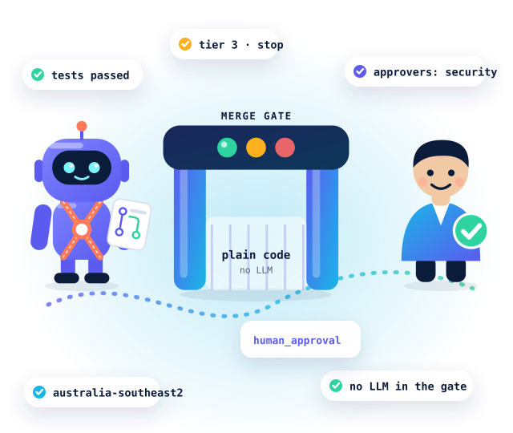
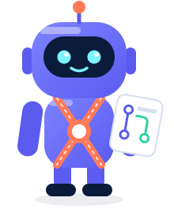
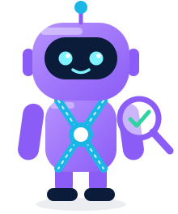
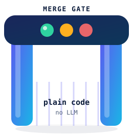

Let AI write the code. Let plain code decide what merges.
The golden workflow for taking an agent live on a cloud platform, as code: policy as reviewable data, a deterministic merge gate, an issue-to-merge loop, a staged bootstrap CLI, and evals that gate changes to the harness itself. Humans stay accountable.

Safe speed for teams building AI agents
Teams use this harness to build AI agents for deployment on a cloud platform. This repo is the harness: the rules, checks and approvals that let an AI coding agent do the build work safely. New to the words? Read the glossary.
Humans stay accountable. The harness decides, with plain code and no AI, whether a change can merge and who must approve it.

GitHub Copilot by default

ADK agent + checklist

plain code
accountable
| Without a harness | With this harness |
|---|---|
| ✕Each team invents its own path to production. | ✓One standard path: the golden workflow, eight stages. |
| ✕An AI builder could change its own tests, rules or permissions. | ✓Files that control the gate are always high risk and need people. |
| ✕Missing evidence can look like a pass. | ✓Missing evidence is a stop. The gate fails closed. |
| ✕Approvers are chosen by hand. | ✓The gate works out who must approve from the files changed. |
| ✕Data might leave Australia. | ✓Only Australian regions are allowed. |
Source: docs/VISION.md, README.
Not a replacement for people
Humans approve. The harness only decides what needs approval.
Not the agents themselves
Those live in the repos it generates from agent-template/.
Not a second framework
Google ADK only. A check rejects imports of other agent frameworks.
Not a deployment tool
Deployment is gated and needs explicit human approval.
One golden path, eight stages
The golden workflow is defined as data in policy/golden_workflow.yaml. As of 26 November 2026 the harness automates build and verify in code, but only against fakes: the real GitHub client is blocked (R2). Frame, provision and connect are partly helped by tools. Register, release and operate are still manual. Glossary.
plan lists three ordered PRs; no Terraform writtenAGENTS.mdFake GitHub onlyInside build and verify: the issue-to-merge loop
A GitHub issue with an agent:* label goes in. A decision comes out. Issues without a label are ignored.
The loop stops and escalates at 4 build rounds or 400,000 tokens (policy/routing.yaml). Today it runs against fakes; the real GitHub client is blocked (see status). Review findings and PR comments are scanned too. Source: docs/ARCHITECTURE.md, docs/EXAMPLES.md (example 12).
Eight rules, in order. No opinions, no LLM.
The gate reads paths, diffs and check results, never a model’s opinion. Pick one of sixteen scenarios to see what it answers. Each result below is a documented output of the real code (a replay, not a reimplementation).
Risk is derived from file paths
The first matching rule wins per file and the highest tier across changed files decides the PR. Approvers are the base roles plus whatever the matching rules add.
Tests and docs
- Plain test modules,
docs/**, README - PRs over 150 lines are bumped to tier 2
Everything else
- Application code
conftest.pyand dependency manifests (supply-chain risk)
Controls and sensitive areas
- Workflows, CODEOWNERS,
policy/**, skills, prompts, eval thresholds - Terraform, IAM,
prod, payments, auth, claims, PII AGENTS.mdand other agent steering files
Who must approve
Every agent PR needs app_team and ai_governance. Paths add more:
| Change touches | Adds |
|---|---|
Gate controls (policy/**, workflows, skills, prompts) | ai_governance security |
Terraform (*.tf) | platform_team |
IAM config, sensitive domains, AGENTS.md | security |
| Production paths | product_owner architecture |
Phases: how much the gate trusts itself
| Phase | Plan approval | Auto-merge |
|---|---|---|
| 1 (ships here) | Always | None |
| 2 | Always | None |
| 3 and 4 | Tier 2 and up | Tier 1 only |
The shipped policy is phase 1: a person reviews every agent PR. The criteria for moving up are still an open question (Q10, draft O3).
Source: policy/risk_tiers.yaml, docs/EXAMPLES.md, docs/GLOSSARY.md.
Three levels, one folder per container
Described in the style of the C4 model: context, containers, components. Every part carries an honest state: Working built and tested (may use fakes), Stub a placeholder, Planned in the roadmap only.
Who and what the harness deals with. It has no database, no web server and no queue today: it is a library and a command-line tool.
agent:* label, approves PRsWorking (people)AgentRequest issue. The harness only drafts from it.Offline only (I1)Decides whether a change can merge and who must approve it
agentic-bootstrap newWorkingworkload-infrastructure repoIllustrative name; actual layout to be validated (Q12)Plan onlyThe main parts, one per top-level folder.
app/harness/The Python package with all the logic: workflow, nodes, adapters, bootstrap CLI. Python, Pydantic, PyYAML, optional ADK, Sunglasses and Model Armor.Workingpolicy/The rules, as data: stages, roles, tiers, routing, regions, checklist, guard, allowlists, skills lock. Strict schemas check every file.Working · several TODOs need ownersevals/Golden and adversarial tasks, request-parsing cases and the runnerDry-run workingagent-template/The starting repo for one agentWorking startertests/pytest, unittest and Hypothesis property testsWorking.github/workflows/Harness CI: lint, format, spelling, types, tests, evals, Gitleaks, zizmorWorkingscripts/End-to-end script with shell and PowerShell wrappersWorking.github/ISSUE_TEMPLATE/The AgentRequest issue formForm working · nothing reads it live (I7)sandbox/Optional builder container (Docker, shell)Stubdeployment/terraform/Notes on how the harness should be hosted. No Terraform files.Notes onlyskills/ · docs/Skills guidance and the documentation plus roadmapWorkingapp/harness/ reads policy/ on start and checks every file against a strict schema.app/harness/ renders agent-template/ when you run agentic-bootstrap new.evals/ runs the workflow and gate on saved tasks and scores the outcomes.tests/ and evals/ both guard policy/ and app/harness/nodes/: a change there needs an eval.tests/ also fail on a broken docs link and on a broken or third-party-loading site.Inside app/harness/. Ports are the slots; adapters are the real parts that plug into them; nodes are plain code and never call an LLM.
Nodes (no LLM)
merge_gate.pyapplies the eight rules and returns decision, tier, reason, approvers Workingtamper_check.pydeleted tests, added skips, fewer asserts, edited baselines or thresholds Workingcapability_check.pynew models, hosts, regions, stores, dependencies, tool links Workinginput_guard.pyscans untrusted text;shadoworenforceWorkingrepo_context.pyread-only, capped, guard-scanned context Workingdiff_parse.pyreads a unified diff safely by hunk counts Working
Core and adapters
workflow.pyIssueToMerge: runs the loop, records a trace, escalates on any adapter or residency error Working with fakesports.pyTriager,Planner,Builder,Reviewer,HumanGate,InputScanner,GitHubPort,RequesterAccessFakes onlyadk_agents.pytriage, plan, review on ADK with Pydantic output schemas; one retry, then escalate Fakes onlycopilot_builder.pyassigns to Copilot, feeds back checks No real clientsunglasses_scanner.pythe Sunglasses scanner behindInputScannerWorkingmodel_armor_scanner.pythe Model Armor scanner behindInputScanner; regional endpoint, template from config Fixture only, not run livecomposite_scanner.pyruns several scanners; blocked if any blocks, and a scanner error counts as a block Workingsandbox_builder.pyStub
Policy loading and bootstrap
policy.py,policy_validation.pystrict Pydantic schemas plus cross-file checks Workinggolden.pychecks all 13 steps are covered and each row has one accountable owner Workingresidency.pyallowed locations only; fails closed Workingskills.pyloads a skill only if pinned by commit and file fingerprint Lock is emptybootstrap/new·check·planStages 1–2 3 plan onlybootstrap/agent_request.pyturns anAgentRequestissue into an untrusted draft (brief, review-only spec, missing fields). Needs a trusted access lookup; calls no model; grants nothing Offline (I1)
The gate’s rule order
- Over 400 changed lines reject_to_planning
- A required check failed or is missing escalated
- CI is not green escalated
- Tampering found in the diff escalated
- Reviewer is the builder (lockout) escalated
- Reviewer did not approve human_approval
- Tier allows auto-merge and no new capability found auto_merge
- Otherwise, naming the approvers human_approval
New capabilities add approvers to the result and never turn a decision into a block.
What agentic-bootstrap new hands each team: the same safe starting point, so every agent begins identically. The mechanic-assistant content is placeholder data.
# a generated agent repo
agent repo
├─ agent/ agent.py (ADK root agent) · prompts.py
│ tools.py (read-only) · config.py
│ telemetry.py (redacted diagnostics)
│ skills/ (one pinned skill) · data/
├─ tests/ unit tests (no cloud) · eval/ starter cases
├─ evals/ golden_set · thresholds · baseline · holdout
├─ docs/ mission-brief · runbook
│ copilot-agent-environment
├─ .github/ CODEOWNERS · copilot-instructions.md
│ agents/agent-builder.agent.md
│ workflows/ agent-checks · copilot-setup-steps
│ preflight.py · coverage.py · eval_gate.py
├─ AGENTS.md rules for the coding agent
└─ pyproject.toml · agents-cli-manifest.yaml
tools.py: read-only by designget_service_history and estimate_repair on sample data. No write tools exist: it can read, not book or pay.telemetry.py: logs the shape, not the contentTool name, outcome and timing. Never prompts or arguments.agent-checks.yml: ten jobsA preflight job runs first, then lint, tests, coverage, quality, evals_no_regression, secret_scan, codeql, dependency_review and zizmor. Coverage enforces the 80% starter mark. Only evals_no_regression can get cloud identity. It is a stub that fails until wired (E3).preflight.py: a tripwire, not a sandboxRuns from the trusted base revision and inspects the candidate checkout without running it: rejects symbolic links, parses files, scans text and runs the harness policy check. Workingeval_gate.py: written, not wiredCompares live eval results with the approved baseline and fails closed. Nothing runs it until live evals are set up (E3, Q18). Not wired| Area | What is used |
|---|---|
| Language | Python >=3.11,<3.14. Local default 3.13. CI tests 3.11, 3.12 and 3.13. |
| Packaging | setuptools (build), uv (installs and lock file), console script agentic-bootstrap |
| Runtime packages | pyyaml>=6.0, pydantic>=2.12,<3 |
| Optional packages | google-adk>=2.12,<3 (extra adk), sunglasses==0.6.20 (extra guard), google-cloud-modelarmor==0.7.5 (extra armor) |
| Dev packages | pytest, hypothesis, ruff, ty, codespell |
| Agent framework | Google ADK only |
| Models | Gemini through Vertex AI (AI Studio keys for local use only) |
| Builder | GitHub Copilot cloud agent (default); Cloud Run sandbox is an optional stub |
| CI | GitHub Actions: lint, format check, spelling, type check, tests (including docs-link and site checks), dry-run evals, Gitleaks, CodeQL, dependency review, zizmor |
| Config | YAML in policy/, validated by Pydantic v2 (strict=True, extra="forbid") |
| Infrastructure | Terraform; workload-infrastructure and platform.tf are illustrative names, to be validated |
Source: docs/ARCHITECTURE.md, pyproject.toml.
Controls you can read, and limits we state out loud
The gate never reads a model’s opinion as proof. Traces hold names, counts and sizes, never file content, secrets or full issue bodies.
Plain code decides
The merge gate never calls an LLM. It follows rules, so it is predictable and auditable.
Fail closed
Unknown or missing evidence is a stop, never a pass.
People for the risky parts
Files that control the gate or agent behaviour always need people.
Outside text is untrusted
Issue text, CI output, repo files and model output are checked before use.
No standing secrets
GitHub App and Workload Identity Federation. No personal tokens.
Stay in Australia
australia-southeast1 (Sydney) and australia-southeast2 (Melbourne). Never global.
What each control answers
.. or deny-listed files; size capsnodes/repo_context.pyevals_no_regression job gets id-token: writeagent-checks.ymlWhat the controls do not cover
The repo is explicit about these limits. They are listed here because a harness that hides them is not trustworthy.
shadow mode. A match is recorded but does not stop the task, and a guard must be passed to the workflow.TODO(owner) markers wait on sign-off.Source: docs/SECURITY.md, docs/tech/INPUT_GUARD.md, docs/DECISIONS.md.
What is built, what is a stub, what is blocked
The roadmap is the source of truth. This snapshot is from 26 November 2026: 265 tests and 65 scored golden tasks pass, with two documented gaps in the input guard still open.
Working built and tested
- Policy files and their strict validation
- Merge gate with six required checks, tamper and new-capability detectors
- Input guard: Model Armor and Sunglasses behind one scanner, blocked if either blocks (Model Armor on a fixture only)
- Issue-to-merge workflow and ADK adapters, with fakes
- Bootstrap
newandcheck, and the agent template with preflight, coverage (80%) and quality checks - Request drafts: the
AgentRequestform and an offline parser (I1) - Dry-run evals and the harness CI, which now also checks formatting, spelling and docs links
Stub / plan only
- Bootstrap
planlists the cloud-project PRs; it does not write Terraform - Sandbox builder: raises
NotImplementedError - Live evals: the mode exits with a stub message
evals_no_regressionin generated repos fails until wired. The baseline comparator is written but not wired (E3)- Model Armor has not run against a live template
- Skills lock is empty until skill names are agreed (Q7)
Planned in the roadmap only
- Real GitHub client on a GitHub App (R2, blocked)
- Gate as a required check and generated CODEOWNERS (R1)
- Durable ADK 2.0 workflow, webhook ingress and queue (R3, R4)
- Traces and audit log, live evals (O1, E1)
- Generated-project preflight command and acceptance test (H2)
- Agent intake: connector library, intake agent, authoring and hosted trigger (I2 to I7)
Blockers
Each one needs a decision or access from a person. The owners shown are suggestions recorded in the open questions, not confirmed assignments.
Milestones
Ten milestones. The coloured edge shows the state: green done, blue in progress, cyan next, red waiting on a decision, grey later.
Source: docs/CHANGELOG.md, docs/OPEN_QUESTIONS.md, docs/DECISIONS.md (fifteen decisions, D-01 to D-15). GitHub’s statements were read on docs.github.com on 26 November 2026.
A governance layer around builders, not another builder
Most tools nearby either write code, decide policy in general, or scan for one kind of problem. This harness composes them around one narrow job: deciding what an AI-written PR needs before it merges. The descriptions below paraphrase each project’s own README.
| Tool | What it is, in its own words | Relationship to this harness |
|---|---|---|
| Builders: they write the code | ||
| OpenHands | A self-hosted developer control centre for coding agents and automations (MIT). Sandboxing is optional; Docker is one option. | A builder. The harness is a governance layer a builder’s PR would pass through. |
| Codex CLI | “A coding agent from OpenAI that runs locally on your computer.” | A builder. Not integrated here. |
| claude-code-action | Anthropic’s Claude Code action for GitHub PRs and issues. Runs on your own runner; model calls can go to Anthropic, Bedrock, Vertex AI or Foundry. | A builder. Not integrated here. The default builder in this harness is GitHub Copilot’s coding agent, behind a Builder port. |
| Policy engines: decide, in general | ||
| Open Policy Agent | A general-purpose policy engine; policies are written in Rego. CNCF graduated; Apache-2.0. | General purpose, where the harness’s gate is narrow and purpose-built, with policy as strict-schema YAML. The two could complement each other; this repo has no OPA integration. |
| Cedar | A language for writing and enforcing authorisation policies, kept separate from application code (Apache-2.0). | Same note as OPA. The gate’s outputs are merge decisions rather than authorisation checks. |
| Agent tooling: what the harness builds on | ||
| Google ADK | “An open-source, code-first Python framework for building, evaluating, and deploying sophisticated AI agents” (Apache-2.0). | Used. The only agent framework allowed, for the triage, plan and review roles and for generated agents. |
| agents-cli | A CLI and skills that help coding assistants build, evaluate and deploy agents on Google Cloud (Apache-2.0). | Used by generated agents for lint, evals, scaffold and deploy. |
| Scanners: narrow, single-purpose checks | ||
| Gitleaks | Detects hardcoded secrets such as passwords, API keys and tokens (MIT). | Used in CI, installed from a pinned release and checked by SHA-256. |
| zizmor | Static analysis for CI/CD, including GitHub Actions (MIT). | Used in CI and in the template’s workflows. |
| Sunglasses | A local, open source (MIT) input scanner for AI agents, in beta. Says a clean result is “a confidence floor and not a guarantee”. | Used as a cheap tripwire in the input guard, pinned to 0.6.20. |
| Model Armor | A Google Cloud service that screens prompts and replies against a saved template, for prompt injection and other risks. | Wired in, not yet run live. Proposed as the main scanner in the input guard and as an ADK plugin. CI plays back an authored fixture. Sydney is not a Model Armor region; in Melbourne, with data residency enforced, it offers three filters (responsible AI, sensitive data protection, prompt injection and jailbreak). |
Descriptions and licences were checked on 26 November 2026 against each project’s README and licence file. This maps roles; it is not a feature benchmark, and we have not measured these tools against each other. Other works on policy-as-code for AI: CNCF, “PaC and AI” (read on 26 November 2026; see the validation log).
From clone to a generated agent in minutes
You do not need cloud access to run the tests or the dry-run evals. Local runs can use an AI Studio key; cloud features need Google Cloud sign-in.
Check the prerequisites
The harness itself needs Python and uv. You only need agents-cli (and Node.js) for generated agent repos.
| Tool | Why | Notes |
|---|---|---|
| Python 3.11, 3.12 or 3.13 | Runs the harness | Pinned to 3.13 locally; needs <3.14 |
| uv | Installs packages, runs agents-cli | |
| Node.js | Needed by agents-cli setup | Generated repos only |
| agents-cli | Lint, evals, scaffold, deploy | uvx --python 3.13 google-agents-cli setup (the upstream README uses uvx google-agents-cli setup; the Python pin is this repo’s) |
Install
$ uv sync --extra dev
Installs the harness and the dev tools (pytest, hypothesis, ruff, ty, codespell, sunglasses).
Run the six checks
The same ones CI runs. Run all six before you open a PR.
$ uv run ruff check . $ uv run ruff format --check . $ uv run codespell $ uv run ty check $ uv run pytest -q $ uv run python evals/run_evals.py --out .m0-eval-report.json
ruff check . | Style and common errors |
ruff format --check . | The code is formatted |
codespell | No misspellings in code or docs |
ty check | Type hints are consistent |
pytest -q | The code and policy files behave, and every docs link resolves |
run_evals.py | The gate and workflow give the right answer on the golden tasks |
Try the bootstrap
Copy the example spec, fill in name, division, owner, sponsor, classification and description, then run the three stages.
$ cp spec.yaml.example spec.yaml $ agentic-bootstrap plan spec.yaml # three ordered cloud-project PRs, as JSON $ agentic-bootstrap new spec.yaml ./my-agent # render an agent repo from agent-template/ $ agentic-bootstrap check ./my-agent # harness policy checks (exit 1 on findings)
check does not look for secrets; CI uses Gitleaks. After new, run deactivate (or open a new terminal) before working inside the new repo. Inside it: agents-cli install && agents-cli lint && uv run pytest.
See it all end to end
$ python scripts/e2e.py # or: make e2e $ python scripts/e2e.py --keep # leave the generated agent in .e2e-work/
Runs the harness, creates a new agent, runs the agent’s checks, then cleans up. On Windows PowerShell set UTF-8 first: $env:PYTHONIOENCODING = "utf-8".
Settings you may meet
HARNESS_ENV=local | Allows an AI Studio key for development; anything else needs Vertex AI |
GOOGLE_GENAI_USE_VERTEXAI=TRUE | Use Vertex AI for the models |
GOOGLE_CLOUD_LOCATION | Must be an allowed Australian region, never global |
HARNESS_MODEL_DEFAULT | Model name; override per role with _TRIAGE, _PLANNER, _REVIEWER |
GHAS_ENABLED=true | Turns on CodeQL and dependency review for private repos, once GitHub Code Security is enabled |
Where to change things
| Who approves what | policy/risk_tiers.yaml (needs an eval) |
| Allowed regions | policy/residency.yaml |
| The gate’s rules | app/harness/nodes/merge_gate.py |
| A test case for the gate | evals/golden_tasks/ |
| What new agents start with | agent-template/ |
Never weaken a gate, approval, threshold, baseline or golden task to make a test pass. See Contributing.
Source: docs/GETTING_STARTED.md, README. The six checks and the three bootstrap stages were run against this repo on 26 November 2026. Prefix agentic-bootstrap with uv run if the virtual environment is not active.
About the harness
Does an AI decide whether a change merges?
No. The merge gate is plain code and never calls an LLM. AI is used to triage, plan and review; the gate reads paths, diffs and check results.
Does it deploy anything?
No. Deployment is gated and needs explicit human approval. The harness decides what a change needs to merge.
Who is accountable?
People. policy/raci.yaml is an illustrative, adaptable policy for roles and responsibilities. Tailor it to your repository; the gate uses the configured policy to determine required approvals.
Is it finished?
Why can’t it use a real GitHub client today?
GitHub’s documentation says assigning an issue to Copilot needs a user token (a personal access token or a GitHub App user-to-server token). The “installation token only, no personal tokens” rule does not allow either, so the security team has to decide (R2).
Can I ask for a new agent?
You can fill in the AgentRequest issue form. Anyone with access to the repository may. Today the harness only turns the issue into an untrusted draft offline. Nothing builds from it yet, and a draft grants no host, model or approval (I1; the rest of agent intake is I2 to I7).
Can I add another agent framework?
No. Google ADK only.
Decisions it makes
What does auto_merge need?
Tier 1 (tests and docs), phase 3 or 4, all six required checks green, the reviewer approving, no tampering and no new capability. The policy ships at phase 1, where nothing auto-merges.
What are the required checks?
lint, tests, coverage, quality, evals_no_regression, secret_scan. A missing check is not treated as passing: the gate escalates and names it.
Why did a tiny change need security review?
Probably it touched a control file, a sensitive path (payments, auth, claims, pii) or an IAM file, or it added something new such as a host, model, region, data store, dependency or tool link. The reason text says which.
Why was reject_to_planning returned?
The change is over 400 lines. Split the task.
Can the capability check approve a new host or dependency?
No. It only adds approvers. People approve.
Is the input guard on?
It must be passed to the workflow, and its policy ships in shadow mode, which records matches without stopping the task. Model Armor is the main scanner and Sunglasses runs beside it, but Model Armor has not yet run against a live template.
Running and fixing
Install fails on Windows with “Microsoft Visual C++ 14.0 or greater is required”
A very new Python has no ready-made PyYAML build, so it tries to compile. Pin Python to 3.13 (3.12 also works).
agents-cli is not found
Open a new terminal after setup and run agents-cli --version. If it is still missing: uv tool install --python 3.13 google-agents-cli.
CI reports a type error I cannot see locally
The ty version is not pinned, so CI can be newer than your machine. Run uv sync --extra dev and try again.
The generated agent’s evals_no_regression check fails
It is a stub that fails until wired to agents-cli eval run through Workload Identity Federation (E3).
My AI Studio key or location is refused
An AI Studio key is allowed only when HARNESS_ENV=local. Locations must be listed in policy/residency.yaml; global is never allowed.
Changing the repo
A test failed after I changed policy/. Can I loosen the threshold?
No. Never weaken a gate, approval, threshold, baseline or golden task to make a test pass. Fix the cause.
Do I need an eval for every change?
For anything under policy/ or app/harness/nodes/, yes: a new or updated golden or adversarial task in evals/golden_tasks/.
How do I add a skill?
Name it in policy/routing.yaml and pin it in policy/skills.lock.yaml with a full commit and the file’s fingerprint. It is a tier-3 change that needs an eval.
What do I do about a TODO(owner)?
Do not invent the answer. Record the dependency and ask the appropriate role or owner.
Can I use a personal access token?
No. Use the GitHub App and Workload Identity Federation.
Where do I report a security problem?
Not yet defined. The repo names no security contact, so this is to be validated.
Where every claim comes from
Project facts come from this repository’s own docs and policy files. External descriptions and vendor documentation were checked on 26 November 2026. Glossary · Roadmap.
In this repository
- Documentation index: reading paths for each audience
- Vision · Architecture · Examples · Glossary
- Getting started · Contributing · FAQ
- Security · Decisions · Open questions
- Roadmap · Changelog · ADK port notes · Input guard
- policy/ · evals/golden_tasks/
Public projects referenced
- google/adk-python: Agent Development Kit
- google/agents-cli: CLI and skills for building agents
- OpenHands · Codex CLI · claude-code-action
- Open Policy Agent · Cedar
- Gitleaks · zizmor · Sunglasses
- CNCF: PaC and AI
Vendor and standards statements were checked on 26 November 2026. The full list, with the exact page for each, is in the validation log below.
What was checked, and where
Each external statement on this site, the verdict on 26 November 2026, and the page it was checked against. If a page changes, this is where to start.
| Statement | Result | Checked against |
|---|---|---|
| Assigning an issue to Copilot needs a user token. The agent-tasks API refuses installation tokens (the R2 blocker) | Confirmed | Copilot cloud agent API guide · Agent tasks REST reference |
| Copilot data residency covers the United States and European Union only (D-10, D1) | Confirmed | Copilot with data residency |
Copilot reads copilot-setup-steps.yml, custom agents in .github/agents, and has a customisable firewall allowlist | Confirmed | Agent environment · Custom agents · Firewall |
| Workflows on Copilot PRs wait for a person to approve them, unless a repository setting is changed | Confirmed | Configuring agent settings |
| Workload Identity Federation lets GitHub Actions reach Google Cloud without long-lived keys | Confirmed | Workload Identity Federation with deployment pipelines |
| Model Armor is available in Melbourne, not Sydney; three filters there with data residency enforced | Confirmed | Locations · Feature availability by region |
| Gemini on Vertex AI is listed for Sydney; the page does not list Melbourne | Confirmed | Generative AI locations |
ADK ships a ModelArmorPlugin | Confirmed | ADK Model Armor integration |
Pinned versions exist: google-cloud-modelarmor 0.7.5, sunglasses 0.6.20 (newer 0.6.28 exists), google-adk 2.12 or later (2.15.1 current) | Confirmed | PyPI: modelarmor · PyPI: sunglasses · PyPI: google-adk |
| Licences and descriptions of the compared projects | Confirmed | READMEs and licence files on raw.githubusercontent.com, for example adk-python, agents-cli, Sunglasses |
| AGENTS.md is an open format for guiding coding agents | Confirmed | agents.md |
| The C4 model has four levels: system context, container, component and code | Confirmed | C4 model: abstractions |
| CNCF article “PaC and AI” (12 August 2025) discusses policy as code for AI-written code, including tests being changed alongside code | Confirmed | CNCF: PaC and AI |
Pages workflow pins exist: actions/checkout resolves to 7.0.1; the other two commits exist | Partly: tag names not checked | checkout package.json at the pinned commit |
Gitleaks v8.30.1 | Tag exists; the release binary and its SHA-256 are not checked | README at tag v8.30.1 |
| OWASP Top 10 for Agentic Applications (cited in the roadmap references) | Not checked: genai.owasp.org is not reachable from the build session | OWASP resource |
Not covered here: statements about this repository come from its own docs and code, and are linked at the foot of each section.